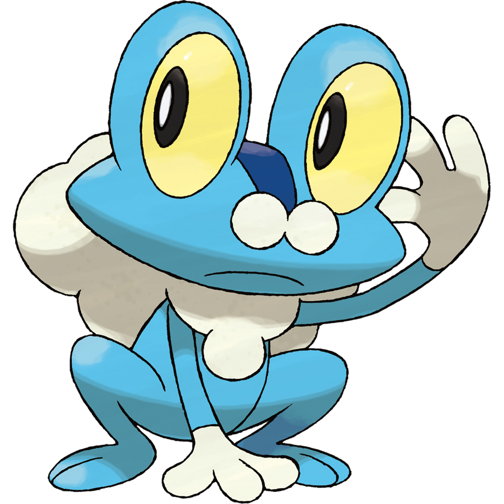
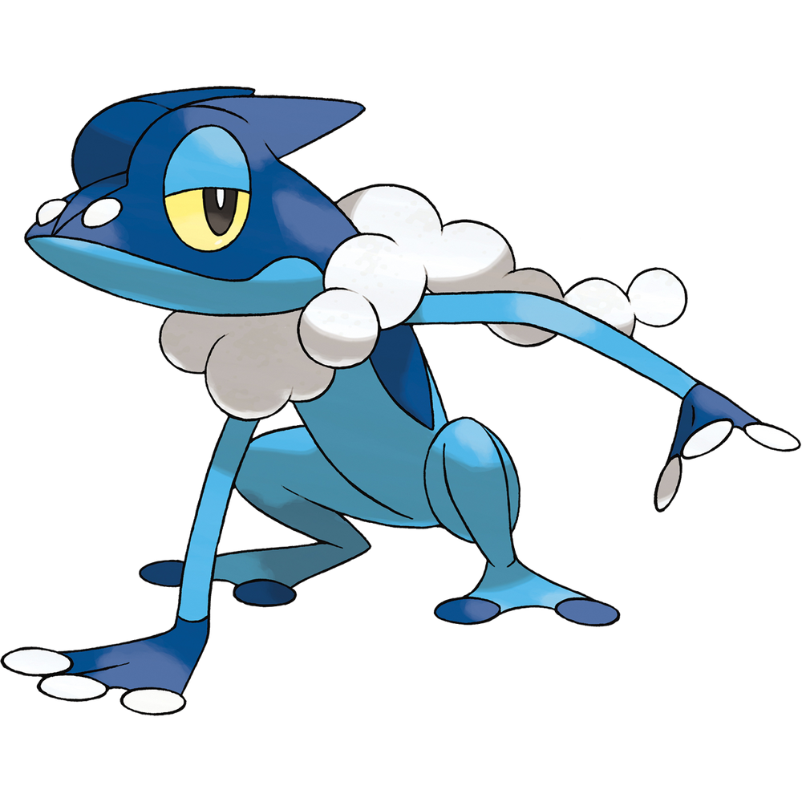
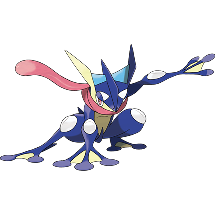
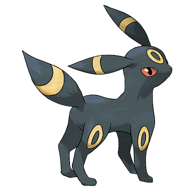
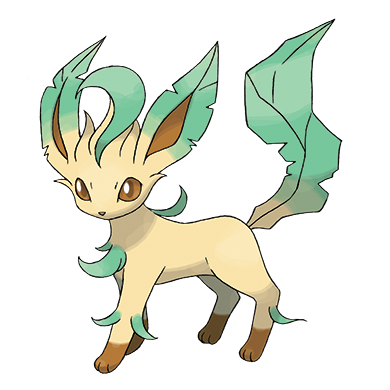

-
개구마르
가슴과 등에서 거품을 내뿜는다. 탄력 있는 거품으로 공격을 막아내고 데미지를 줄인다.
섬세한 거품으로 몸을 감싸 피부를 보호한다. 태평한 척하면서 빈틈없이 주위를 살핀다.
-
개굴반장
거품으로 싸인 돌멩이를 던지는 기술을 쓴다. 30m 앞에 있는 빈 캔을 맞출 정도로 컨트롤이 좋다.
누구보다도 가벼운 몸을 갖고 있다. 600m를 넘는 타워의 꼭대기까지 1분이면 올라간다.
-
개굴닌자
물을 압축시켜 수리검을 만들어낸다. 고속으로 회전시키며 던지면 금속도 두 동강이 난다.
닌자처럼 신출귀몰하다. 재빠른 움직임으로 상대를 농락하면서 수리검으로 벤다.
-
이브이

주위의 환경에 맞춰서 몸의 구조를 바꿔나가는 능력의 소유자다.
불안정한 유전자 덕분에 여러 가지 진화의 가능성을 가지고 있는 특수한 포켓몬.
-
에브이

공기의 흐름을 읽어내서 앞으로의 날씨와 상대의 움직임 등을 모두 맞혀버린다.
이마의 구슬에서 사이코 파워를 방사해서 싸운다. 파워가 다하면 구슬의 색이 흐려진다.
-
블래키
화가 나면 전신의 모공으로부터 독소가 섞인 땀을 뿜어내어 상대의 눈을 노린다.
보름달이 뜬 밤이나 흥분했을 때 전신의 고리 무늬가 노랗게 빛난다.
-
리피아
잎사귀에서 나는 독특한 향기는 가라르인들의 취향에 맞다. 향수로 가공되어 인기가 높다.
꼬리는 날카로운 칼날 같다. 큰 나무도 두 동강 내는 탁월한 예리함을 자랑한다.
-
메타몽

전신의 세포를 재구성해서 본 것과 똑 닮게 변신하지만 힘이 빠지면 원래대로 돌아간다.
메타몽끼리 만나게 되면 상대와 똑같은 모습이 되기 위해 평소보다 격렬하게 움직인다.